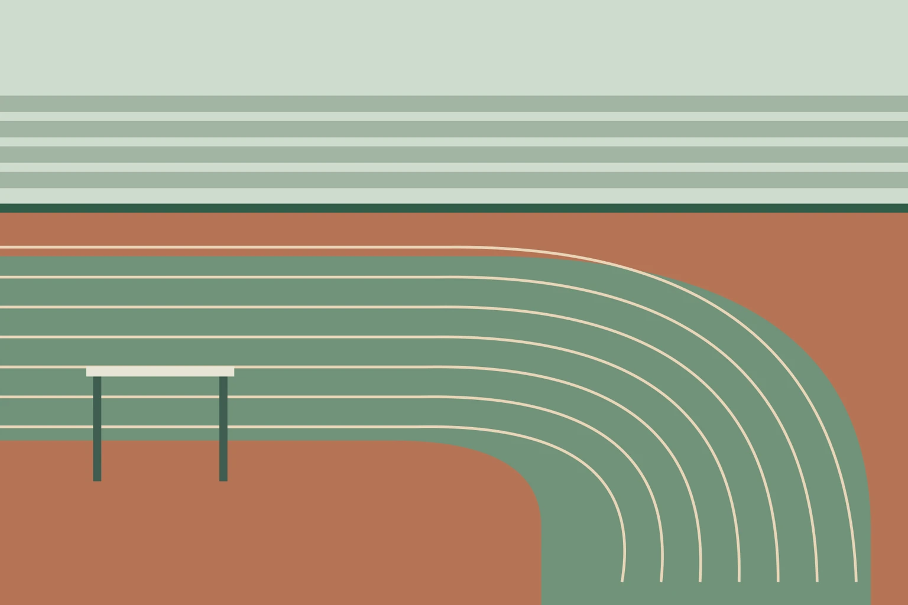

Route / Park loop
Putaran taman merupakan contoh format rute yang kembali ke titik mulai. Halaman ini tidak mengklaim adanya taman tertentu, panjang lintasan, atau hasil pemeriksaan keselamatan lokasi nyata.
10
CHANNELDEMO
SCREEN10/32
MODELOCAL

Pahami formatnya
Catat titik mulai yang tidak menghalangi pengguna taman lain serta penanda untuk kembali.
Periksa konteks
Tanyakan permukaan jalur, persimpangan, penerangan, dan aturan berbagi ruang pada pengelola atau penyelenggara nyata.
Pilih langkah berikutnya
Siapkan pilihan mengakhiri kegiatan lebih awal dan cara memberi tahu kru tanpa membagikan lokasi pribadi kepada publik.